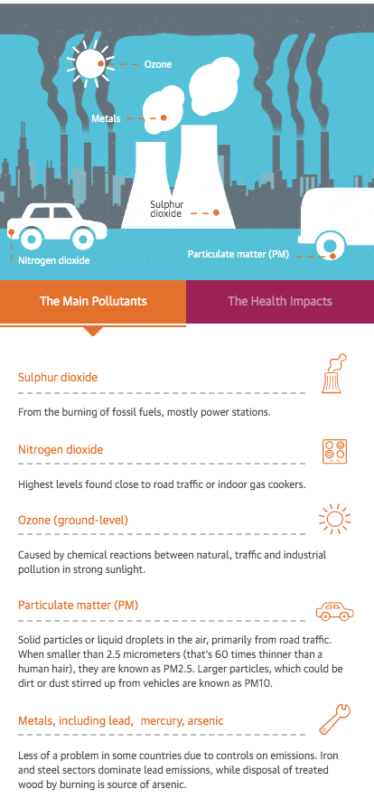
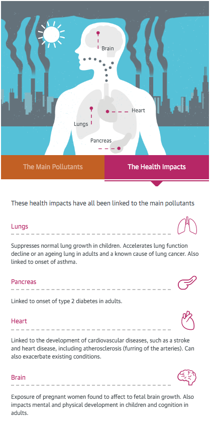

Práctica 2
HOW AIR POLLUTION AFFECTS YOUR HEALTH [INFOGRAFÍA- THE GUARDIAN]
La infografía que me dispongo a comentar fue publicada por Paul Tinker y Tom Levitt, redactores del periódico británico The Guardian, el 5 de julio de 2016. El objetivo principal de la infografía es servir como ayuda para explicar los principales contaminantes y su impacto en la salud.
Contexto

La noticia que acompaña a la infografía pretende informar sobre los efectos que tiene sobre la salud la contaminación atmosférica provocada por el tráfico y la industria, ya que (y cito textualmente):
Air pollution from traffic and industry is leading to the premature death of more than three million people a year. Globally, that’s more than malaria and HIV/Aids combined.
Debido a la relevancia de este hecho, los autores mencionados con anterioridad, han querido diseñar esta infografía interactiva para que sus lectores comprendan mejor esta relación contaminación - salud.
Infografía
Se divide en dos apartados a los cuales puedes acceder haciendo click en el recuadro naranja o en el granate:
- Los principales contaminantes (The Main Pollutants) - naranja
- Los impactos en la salud (The Health Impacts) - granate
| Los principales contaminantes | Los impactos en la salud |
|  |  |
| En este apartado nos encontramos en la parte superior con una imagen en movimiento donde podemos ver los contaminantes y de donde proceden (vehículos, fábricas,etc). El fondo es de tonos azul grisáceos y formado por el sol y un gran número de edificios sobre los cuales flotan enormes nubes de humo. | En la parte superior de este apartado podemos observar la silueta del cuerpo humano de caderas hacía arriba, donde están dibujados y señalados los órganos que reciben el impacto de estos contaminantes (cerebro, pulmones, corazón, pancreas). El fondo es el mismo que el del apartado anterior. |
| En la parte inferior están presentados los contaminantes que encontramos en la parte superior, pero con una breve "descripción". En esta breve descripción se nos informa de manera más detallada de donde proceden (Ejemplo: Dióxido de azufre - Procedente de la quema de combustibles fósiles, sobre todo de las centrales eléctricas). Los nombres de los contaminantes están en naranja, así como los dibujos que los acompañan. | La parte inferior del segundo apartado sigue el mismo formato que su compañera, los únicos cambios que merece la pena resaltar hacen referencia al color empleado (esta vez es granate) y a la relación título-descripción: Primero se menciona el órgano y después nos encontramos con una breve descripción de las enfermedades que se producen en ellos debidos a los contaminantes (Ejemplo: Pancreas - vinculado a la aparición de la diabetes tipo 2 en adultos). |
Por último, al final del artículo, nos encontramos con la fuente desde la cual se han obtenido los datos para crear la infografía:
Data contained within this graphic was compiled from the report ‘Every breath we take: the lifelong impact of air pollution’ by the Royal College of Physicians
Conclusiones
- El formato interactivo de la infografía es un elemento que, desde mi punto de vista, está muy bien empleado ya que permite presentar un tema de carácter científico (y por tanto, complejo) de una manera muy didáctica, accesible y entendible por la mayoría de los lectores. Sabemos que The Guardian es pionero en el periodismo de datos y esta infografía lo demuestra. Razón por la cual he querido escogerla como objeto de mi análisis.
- Los colores empleados también han sido muy acertados. Los tonos grises y azules para reflejar el ambiente contaminado, sobrecargado y triste, que, desgraciadamente, predomina hoy en día en las grandes urbes. El color naranja que sirve como nexo de unión de toda la información relacionada con los contaminantes: naranja como sinónimo de toxicidad. Y por último, el granate, que conecta los datos referentes a los orgános y los impactos dañinos que reciben: un granate cuyo tono simboliza a la perfección el color de los órganos.
- Considero que esta infografía se ha diseñado de una manera muy concienzuda y, por eso mismo, el resultado ha sido impecable. La información presentada es la justa y necesaria y la organización empleada facilita la asimilación de sus datos, 2 elementos clave para poder catalogar a una infografía como "excelente".